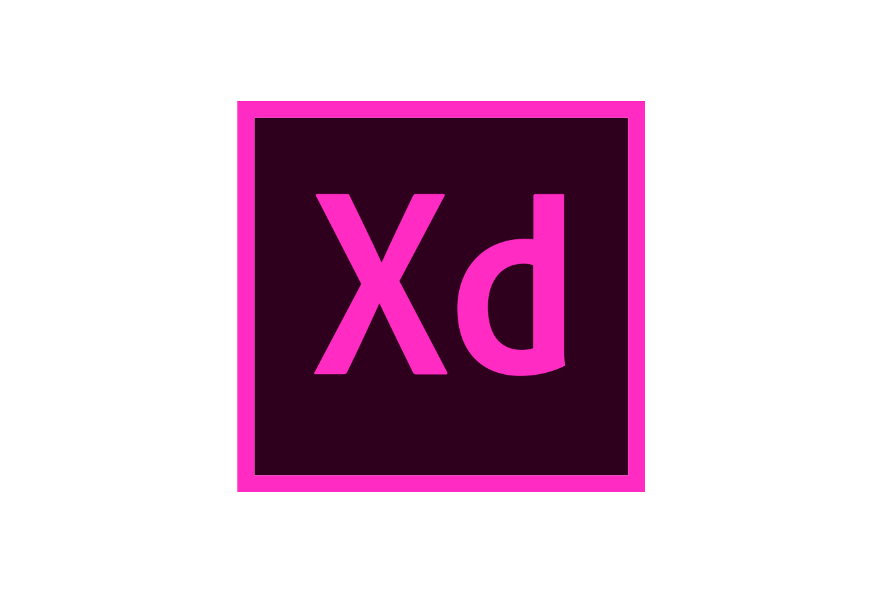

ADOBE EXPERIENCE DESIGN
Adobe XD is a vector-based user experience design tool for web apps and mobile apps, developed and published by Adobe Inc. It is available for macOS and Windows, although there are versions for iOS and Android to help preview the result of work directly on mobile devices.

SYSTEM REQUIREMENTS:-
THESE ARE THE MINIMUM SYSTEM REQUIREMENTS FOR XD
1. OS :- WINDOWS 10 OR 11
2. PROCESSOR :- 2.5 Ghz recommended
3. RAM :- 4GB
4. STORAGE :- 8GB
FAQ
1. Should I disable my antivirus ?
No need.
2. Is it legal?
Seriously ? XDD
3. How to install?
Extract the downloaded zip file and execute the Set-up.exe file.